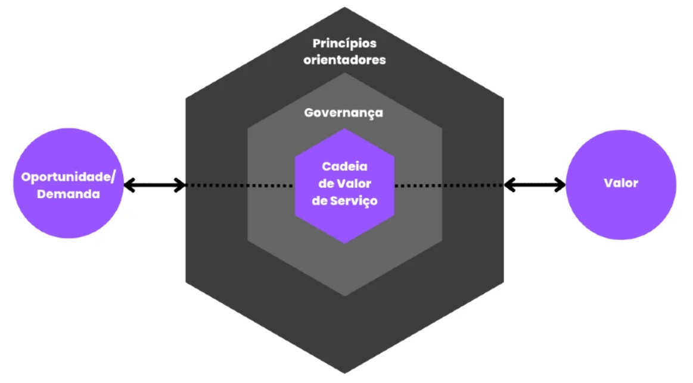
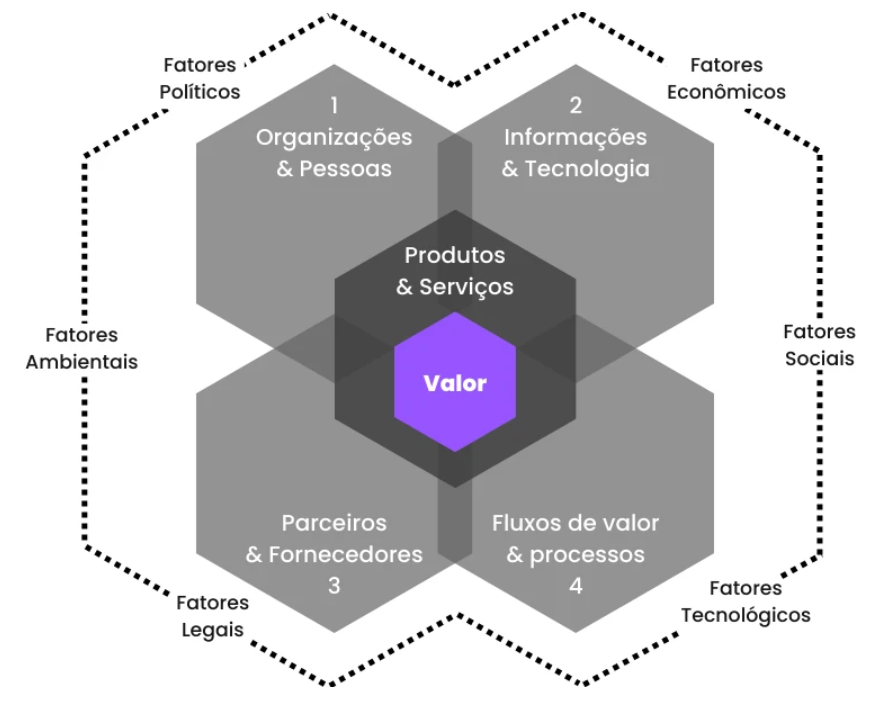
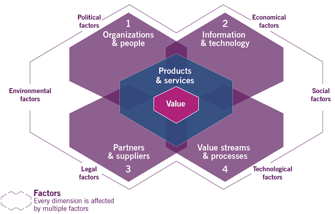

ITIL 4
Itens do Edital:
g) Governança de TI: ITIL versão 4 (ITIL 4): Operação de Serviços (Gerenciamento de Eventos, Gerenciamento de Incidentes, Gerenciamento de Problemas, Cumprimento de Requisições, Gerenciamento de Acessos), Desenho de Serviços (Gerenciamento de Níveis de Serviço, Gerenciamento de Capacidade, Gerenciamento de Disponibilidade, Gerenciamento de Continuidade de Serviços de TI, Gerenciamento de Continuidade de Negócio), Transição de Serviços (Gerenciamento de Configuração e Ativos de Serviços de TI, Gerenciamento de Liberação e Implantação, Gerenciamento de Mudanças), Melhoria Contínua de Serviços, Métricas (Fatores Críticos de Sucesso - CSFs, Índices Chave de Performance - KPIs).
O que é o Sistema ITIL
O Sistema ITIL é um conjunto de boas práticas de gerenciamento de serviços de tecnologia de informação. Ele está de acordo com a norma ISO/IEC 20000, primeira padronização da International Organization for Standardization (ISO) voltada exclusivamente para a gestão de TI.
ITIL é a sigla para Information Technology Infrastructure Library – que pode ser traduzido para “biblioteca de infraestrutura de tecnologia da informação”.
O sistema foi desenvolvido pela Agência Central de Computação e Telecomunicações (CCTA, na sigla em inglês) do Reino Unido na década de 1980, com o objetivo de estabelecer um padrão de segurança e confiabilidade na gestão de processos de TI, garantindo assim uma boa experiência para os usuários.
Para isso, o modelo descreve boas práticas de infraestrutura, manutenção e operações. As orientações estão alinhadas aos métodos ágeis, ao DevOps e ao Lean, bastante utilizados por times de tecnologia.
Desde que o ITIL foi proposto pela CCTA, o sistema passou por quatro grandes atualizações:
ITIL v1
A primeira versão do ITIL era voltada para as agências governamentais, que começavam a se informatizar na década de 1980. Era, literalmente, uma biblioteca: uma coleção de livros físicos que chegou a mais de 30 volumes em 1996.
ITIL v2
Nos anos 2000 foi lançada a segunda versão do ITIL. Os 30 volumes foram condensados em 9, mas ainda eram voltados para entidades do governo britânico.
ITIL v3
Com a popularização do modelo em empresas e demais entidades privadas, foi lançada uma nova atualização em maio de 2007.
O ITIL v3 era descrito em 5 livros, que reuniam 26 processos e 4 funções. A maior inovação foi o conceito do Ciclo de Vida de Serviço (CVS), que era composto por dois componentes básicos:
Núcleo do ITIL: conjunto de melhores práticas que podem ser adotadas por todas as organizações que prestam serviços ao negócio;
Guias complementares do ITIL: boas práticas complementares reunidas em publicações específicas para diferentes setores da indústria, modelos operacionais e arquiteturas de TI.
Em 2011, oITIL v3 ganhou uma grande atualização para dar clareza a conceitos e adicionar novas práticas ao CVS.
É nesse período também que a CCTA foi incorporada ao Escritório de Comércio Governamental (OGC, na sigla em inglês), entidade do Reino Unido responsável por promover a eficiência nos processos de negócios do Estado.
O sistema ITIL passou a ser atualizado pelo OGC até 2013, quando uma joint venture entre o governo britânico e a empresa Capita, a Axelos, assumiu o framework. Em 2021, a Axelos passou a fazer parte do grupo PeopleCert.
ITIL 4
A quarta e última atualização do ITIL veio em fevereiro de 2019, com a publicação do livro “ITIL Foundations”.
O modelo de gestão de TI foi alterado para atender as necessidades da Era Digital, com foco na criação de valor para os usuários, na condução de estratégias de negócios e na adaptação à transformação digital.
As principais mudanças do ITIL 4
O ITIL 4 foi desenvolvido em conjunto entre a Axelos e a comunidade de profissionais de TI para adaptar o ITIL v3 às mudanças cada vez mais aceleradas da Era Digital.
A principal mudança é a maior flexibilidade na execução dos processos. Na versão anterior, havia um certo engessamento no CVS, que dependia de uma série de estágios para ser executado.
O ITIL 4 propõe o Sistema de Valor de Serviço (SVS) para alterar esse cenário. O SVS é um conjunto de componentes e atividades de uma empresa que possibilita a criação de valor.
A flexibilidade vem da criação de um ecossistema entre organização, fornecedores, stakeholders e clientes. Todos devem atuar juntos para manter o sistema funcionando.
Os componentes do SVS são:
Cadeia de valor de serviço: modelo operacional flexível para a entrega e aprimoramento contínuo de serviços. Tem como atividades principais planejar, melhorar, engajar, desenhar, construir e entregar;
34 práticas que atualizam os processos do ITIL v3;
Governança: conjunto de normas e práticas que são a base para a definição de processos internos, de acordo com as exigências do setor e os valores da organização. Facilita a integração com outros frameworks como o COBIT.
Melhoria contínua.

Outra mudança importante é a inclusão de tecnologias emergentes, como Cloud Computing, Infraestrutura como Serviço (IaaS), Machine Learning e blockchain.
O ITIL 4 também introduziu novos conceitos, que você vai conhecer em detalhes a seguir.
Os princípios do ITIL 4
São 7 princípios que devem orientar os profissionais de TI na adoção do SVS e, assim, adaptar o ITIL à realidade de suas empresas:
Concentrar-se no valor;
Começar por onde você está;
Avançar iterativamente com feedback;
Colaborar e promover a visibilidade;
Pensar e trabalhar pensando no todo;
Manter os processos simples e práticos;
Otimizar e automatizar constantemente.
As 4 dimensões do ITIL 4

As dimensões do ITIL são necessárias para a entrega de valor ao cliente, além de facilitar a visão holística da gestão de serviços. Todas são afetadas por fatores internos e externos à organização.
As 4 dimensões são:
Organizações e pessoas;
Informação e tecnologia;
Parceiros e fornecedores;
Fluxos de valor e processos.
As 34 práticas do ITIL 4
As práticas do ITIL 4 são “um conjunto de recursos necessários para realizar o trabalho ou cumprir um objetivo”. Elas têm como objetivo dar uma visão holística do sistema de serviços, ao considerar elementos como cultura, tecnologia, informações e gerenciamento de dados.
A palavra “prática” também evita as ambiguidades do termo “processos”, que é usado no dia a dia das empresas em todos os departamentos. Hoje, o ITIL considera um processo como “um conjunto de atividades que transformam entradas em saídas”.
As práticas são divididas em 3 grandes grupos:
1. Práticas gerais de gestão
Gerenciamento da estratégia
Gerenciamento da segurança da informação
Gerenciamento de fornecedor
Gerenciamento de mudança organizacional
Gerenciamento de projetos
Gerenciamento de relacionamento
Gerenciamento de riscos
Gerenciamento de talento e força de trabalho
Gerenciamento do conhecimento
Gerenciamento do portfólio
Gerenciamento financeiro dos serviços
Gestão da arquitetura
Medição e reporte
Melhoria contínua
2. Práticas de gestão de serviço
Análise de negócio
Central de serviço
Desenho de serviço
Gerenciamento de ativos de TI
Gerenciamento de capacidade e desempenho
Gerenciamento do catálogo de serviços
Gerenciamento de configuração de serviço
Gerenciamento de continuidade de serviço
Gerenciamento de disponibilidade
Gerenciamento de incidente
Gerenciamento de liberação
Gerenciamento de nível de serviço
Gerenciamento de problema
Gerenciamento de requisição de serviço
Habilitação de mudança
Monitoramento e gerenciamento de evento
Validação e teste de serviço
3. Práticas de gestão técnica
Desenvolvimento e gerenciamento de software
Gerenciamento de implantação
Gerenciamento de infraestrutura e plataforma
Nenhuma prática está vinculada a um elemento do SVS nem é pré-requisito para a adoção de outras práticas. Não é obrigatório usar todas as 34 simultaneamente.
Em negrito itens citados no edital.
ITIL 4 - Prof. Gabriel Pacheco (Youtube)
ITIL 4 - Prof. Adriano Martins Antonio (Youtube)
Princípios Orientadores da ITIL 4 (Preparatório para o exame ITIL 4 Foundation)
Sistema de Valor de Serviços da ITIL 4 - ITSM
Simulado 1 Comentado da ITIL 4 Foundation (40 Perguntas - Parte 1)
Simulado 1 Comentado da ITIL 4 Foundation (40 Perguntas - Parte 2)
Simulado 2 Comentado da ITIL 4 Foundation (40 Perguntas - Parte 1)
Simulado 2 Comentado da ITIL 4 Foundation (40 Perguntas - Parte 2)
ITIL®: o que é, para que serve e como tirar a certificação
O ITIL tem sido um dos mais populares frameworks dos últimos 20 anos, servindo como uma referência para as empresas gerenciarem melhor seus serviços habilitados por tecnologia.
Atualmente é difícil encontrar alguém que nunca tenha ouvido falar sobre ITIL. Seja em um artigo, um comentário na empresa ou uma vaga de TI.
Mas se você está procurando um conteúdo mais completo sobre este tema, especialmente sobre a versão mais recente do ITIL, então está no lugar certo.
O que é ITIL?
O acrônimo ITIL se refere à Information Technology Infrastructure Library ou Biblioteca de Infraestrutura de Tecnologia da Informação.
Este acrônimo há algum tempo não representa mais o que a ITIL significa nos dias de hoje. Portanto, podemos considerar que o nome foi mantido mais por uma questão de marca e reconhecimento do que pelo significado do acrônimo.
De maneira simples, o ITIL pode ser considerado como um conjunto de práticas detalhadas para se fazer um bom gerenciamento de serviços habilitados pela tecnologia da informação.
Mas dada a sua evolução através dos anos e a sua popularidade gigantesca, podemos considerar que o ITIL é hoje a principal referência para gerenciamento de serviços de TI.
Qual é a finalidade e a importância do ITIL?
Desde 1989, em mais de 180 países, ITIL® tem sido reconhecida mundialmente como líder em Gerenciamento de Serviço de TI (IT Service Management – ITSM).
O propósito da ITIL 4 é oferecer às organizações uma estrutura prática e flexível como suporte na jornada rumo ao novo mundo da transformação digital, ajudando a alinhar os recursos humanos, digitais e físicos para competir em um cenário moderno e complexo.
O ITIL4 foi construído com base neste guia por meio da reformulação das práticas de ITSM estabelecidas no contexto mais amplo da experiência do cliente, dos fluxos de valor, da transformação digital e do pensamento sistêmico. Também adota novas formas de trabalho, como Lean, Agile e DevOps.
Além disso, a nova versão do ITIL também trás orientações para as organizações navegarem na nova era tecnológica, mais conhecida como a Quarta Revolução Industrial, marcada por tecnologias emergentes, como: inteligência artificial, Internet das Coisas, nanotecnologia e muito mais.
Por fim, o ITIL também é a qualificação de TI imprescindível para profissionais que buscam atingir todo o seu potencial, dar um salto na carreira e entregar uma mudança poderosa a organizações ambiciosas.
Para marcas mundiais de grande importância, como IBM, NASA, Shell, HP, British Airways e Disney, os profissionais com certificação ITIL são a força que mantém a continuidade das operações de negócio.
E para quem deseja construir (e reconstruir) as bases do mundo digital, tudo começa com treinamento e certificação.
Quem usa o ITIL?
O ITIL pode beneficiar qualquer organização que forneça um produto ou serviço habilitado (ou não) por TI. Ele é usado por organizações em todo o mundo em todas as indústrias e setores:
Grandes, médias e pequenas empresas
Governos nacionais, estaduais e locais.
Universidades e instituições de educação
Organizações não governamentais
Embora o ITIL seja usado em todo o mundo, é difícil encontrar uma lista definitiva e oficial de organizações que o utilizam. No entanto, A Axelos (quem atualmente cuida do desenvolvimento do ITIL ) publica regularmente informações sobre empresas que usam ITIL através de artigos, estudos de caso, white papers e webinarios (todos em inglês, infelizmente).
Origens do ITIL
ITIL4 (e não ITIL v4)
Em 18 de fevereiro de 2019, é lançada a quarta versão, que deixa de usar o acrônimo “v”, passando a se chamar simplesmente ITIL4.
Há dois motivos para a ausência do “v”.
- Uma referência à quarta revolução industrial, ou indústria 4.0.
- A estrutura sugere que as publicações não serão tão centralizadas quanto eram na versão anterior.
No ITIL v3 haviam 5 publicações core, cada uma com algumas centenas de páginas. Qualquer atualização nesta estrutura geraria um grande esforço.
No ITIL4 os arquitetos parecem ter incorporado os princípios dos quais descrevem na própria literatura, como o de progredir iterativamente com feedback.
Isso significa que, ao que tudo indica, teremos publicações mais específicas e um volume maior de atualizações independentes nas publicações, que não afetam a publicação core – ITIL4 Foundation.
O que há de novo no ITIL4?
Um novo modelo conceitual
O ITIL4 traz agora uma nova forma de contextualizar e fornecer serviços, de forma muito mais adaptável, rápida e totalmente transparente.
Muito diferente da versão anterior, a primeira quebra de conceitos e paradigmas é a forma de conceber o serviço como um todo.
O conceito de ciclo de vida do serviço descrito na versão anterior, mesmo que não intencionalmente, sugeria uma sequência de estágios e processos que descreviam a vida do serviço desde a sua concepção até a sua descontinuação.
Por exemplo, para que um serviço estivesse num momento de codificação (Transição), teoricamente ele deveria ter passado pelos ciclos de Estratégia e Desenho.
A nova versão baseia-se agora em um fluxo de valor flexível, conhecido como Service Value System (Sistema de Valor de Serviço).
Este novo modelo conceitual é mais robusto e não se concentra apenas em processos, mas também em outro componentes de vital importância para o gerenciamento de serviços e a entrega de valor, como a governança e princípios orientadores, que veremos com mais detalhes ao longo deste artigo.
Quais os elementos chave do ITIL4?
O modelo conceitual do ITIL4 apresenta 5 elementos principais. São eles:
O Sistema de Valor de Serviço (SVS)
A Cadeia de Valor de Serviço (CVS)
As quatro dimensões do gerenciamento de serviços
Os princípios orientadores
As práticas ITIL
Sistema de valor de serviço
O sistema de valor de serviço (SVS) é um componente chave do ITIL4 que facilita a cocriação de valor. Ele descreve como todos os componentes e atividades de uma organização trabalham juntos para permitir a criação de valor.
Como o SVS tem interfaces com outras organizações, ele forma um ecossistema e também pode criar valor para essas organizações, seus clientes e partes interessadas.
Os componentes do sistema de valor de serviço podem ser combinados de uma forma flexível, o que requer integração e coordenação para manter a organização consistente.
Os componentes chave do SVS são:
A cadeia de valor de serviço;
As práticas da ITIL (uma modernização dos antigos “processos” do ITILv3);
Os princípios orientadores;
Governança (abrindo espaço para integração com frameworks como o COBIT 2019;
Melhoria contínua.
No vídeo abaixo você pode aprender mais sobre o conceito do Sistema de Valor de Serviço (SVS)
Cadeia de Valor de Serviço
No centro da SVS está a cadeia de valor de serviços – um modelo operacional flexível para a criação, entrega e melhoria contínua dos serviços. A cadeia de valor do serviço define seis atividades principais:
Planejar;
Melhorar;
Engajar;
Desenho e transição;
Obter / construir;
Entregar e suportar.

Eles podem ser combinados em muitas sequências diferentes, o que significa que a cadeia de valor de serviço permite que uma organização defina um número de variantes de fluxos de valor, por ex. o ciclo de vida do serviço v3.
A flexibilidade da cadeia de valor do serviço permite que uma organização reaja de forma efetiva e eficiente às demandas mutáveis das partes interessadas.
No vídeo a seguir explico um pouco mais sobre a Cadeia de Valor de Serviço (CVS):
As quatro dimensões do gerenciamento de serviços

Uma abordagem holística para o gerenciamento de serviços é fundamental no ITIL 4. Ele define quatro dimensões que são críticas para a facilitação bem-sucedida de valor para os clientes e outras partes interessadas.
As quatro dimensões são:
Organizações e pessoas: Uma organização precisa de uma cultura que apoie seus objetivos e o nível certo de capacidade e competência entre sua força de trabalho.
Informação e tecnologia: No contexto da SVS, isso inclui as informações e o conhecimento, bem como as tecnologias necessárias para o gerenciamento de serviços.
Parceiros e fornecedores: refere-se aos relacionamentos de uma organização com as outras empresas envolvidas no design, na implantação, na entrega, no suporte e na melhoria contínua dos serviços.
Fluxos e processos de valor: Como as várias partes da organização trabalham de forma integrada e coordenada é importante para permitir a criação de valor através de produtos e serviços.
É essencial que seja dada uma quantidade adequada de foco a cada uma dessas dimensões, para que o SVS permaneça equilibrado e eficaz.
Princípios orientadores
O ITIL4 apresenta sete princípios orientadores. Estes princípios não são novos, e visam ajudar os profissionais de TI a adotar e adaptar as orientações da ITIL às suas próprias necessidades e circunstâncias específicas.
Os princípios orientadores são:
Concentre-se no valor
Comece por onde você está
Progrida iterativamente com feedback
Colabore e promova a visibilidade
Pense e trabalhe de forma holística
Mantenha simples e prático
Otimize e automatize
Os princípio orientadores devem ser avaliados em todas as etapas da prestação de serviços e, quando relevantes, podem ser empregados de maneira individual ou agrupada, independentemente do nível ou das circunstâncias.
O foco do ITIL4 em colaboração, automação e simplicidade refletem os princípios encontrados nas metodologias Ágil, DevOps e Lean.
Neste outro vídeo falo com um pouco mais de detalhes sobre os princípios orientadores:
De processos à práticas
O ITIL até agora utilizou “processos” para gerenciar serviços de TI. A atualização expande os processos para que elementos como cultura, tecnologia, informações e gerenciamento de dados também sejam considerados para promover assim uma visão holística das formas de trabalho.
Isso é conhecido como “práticas”, uma parte fundamental do novo framework. O SVS inclui 34 práticas de gerenciamento, que são conjuntos de recursos organizacionais para executar o trabalho ou realizar um objetivo.
As práticas compartilham o mesmo valor e importância dos processos, mas seguem uma abordagem mais holística.
O ITIL4 inclui 34 práticas de gerenciamento como “conjuntos de recursos organizacionais projetados para realizar trabalho ou cumprir um objetivo”. Para cada prática, há vários tipos de orientação, como termos e conceitos-chave, fatores de sucesso, atividades-chave, objetos de informação, etc.
Veja a seguir a lista das práticas do ITIL4:
As 34 práticas são agrupadas em três categorias:
Práticas gerais de gerenciamento
Práticas de gerenciamento de serviço
Práticas de gerenciamento técnico
Práticas gerais de gerenciamento:
Gerenciamento da estratégia
Gerenciamento do portfólio
Gestão da arquitetura
Gerenciamento financeiro dos serviços
Gerenciamento de talento e força de trabalho
Melhoria contínua
Medição e reporte
Gerenciamento de riscos
Gerenciamento da segurança da informação
Gerenciamento do conhecimento
Gerenciamento de mudança organizacional
Gerenciamento de projetos
Gerenciamento de relacionamento
Gerenciamento de fornecedor
Práticas de gerenciamento de serviço:
Análise de negócio
Gerenciamento do catálogo de serviços
Desenho de serviço
Gerenciamento de nível de serviço
Gerenciamento de disponibilidade
Gerenciamento de capacidade e desempenho
Gerenciamento de continuidade de serviço
Monitoramento e gerenciamento de evento
Central de serviço
Gerenciamento de incidente
Gerenciamento de requisição de serviço
Gerenciamento de problema
Gerenciamento de liberação
Habilitação de mudança
Validação e teste de serviço
Gerenciamento de configuração de serviço
Gerenciamento de ativos de TI
Práticas de gerenciamento técnico:
Gerenciamento de implantação
Gerenciamento de infraestrutura e plataforma
Desenvolvimento e gerenciamento de software
Se você quer entender um pouco mais sobre as práticas do ITIL4, recomendo este vídeo:
Quais os benefícios do ITIL para o negócio?
Do ponto de vista de negócios, a adoção de práticas ITIL por
Os provedores de serviços de TI – sejam fornecedores internos ou externos – garantem muitos benefícios, incluindo:
Serviços de TI que se alinham melhor com as prioridades e objetivos do negócio, o que significa que o negócio alcança mais em termos de seus objetivos estratégicos.
Custos de TI conhecidos e gerenciáveis, garantindo que a empresa planeje melhor suas finanças.
Aumento da produtividade, eficiência e eficácia dos negócios, porque os serviços de TI são mais confiáveis e funcionam melhor para os usuários de negócios.
Economias financeiras de gerenciamento aprimorado de recursos e redução do retrabalho.
Gerenciamento de mudanças mais eficaz, permitindo que a empresa acompanhe as mudanças e impulsione as mudanças nos negócios a seu favor.
Maior satisfação do usuário e do cliente com a TI.
Melhor percepção do cliente final e imagem da marca.
Conclusão
O ITIL padronizou o “idioma” do gerenciamento de serviços. Os termos que a maior parte das empresas utilizam, como SLA, Incidente, Mudança, Problema, Requisição de Serviço e Service Desk surgiram ou foram popularizados pelo ITIL.
Empresas de todos os portes e formatos podem se beneficiar de ITIL. Sendo assim, as ferramentas práticas, visões e percepções que você adquire por meio do guia ITIL, mas elas sempre devem ser adaptadas para atender às necessidades específicas da sua organização.